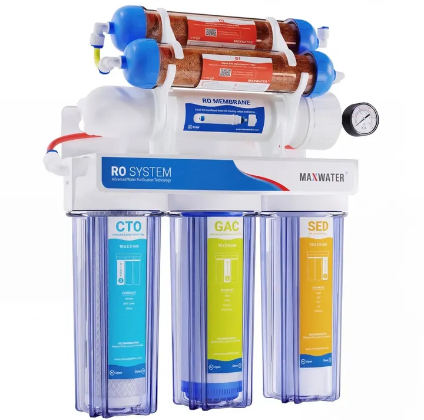

من مجموعة أكوا هافنAQUA HAVEN / THE COLLECTION
جهاز تحلية مياه RO/DI ماكس ووتر 6 مراحل – 100 جالون/يوم
جهاز تناضح عكسي مع مرحلتي إزالة أيونات (DI) يعطيك ماء نقي بـ TDS صفر لأحواض الريف والأحواض المزروعة والشرمب الحساس. 6 مراحل، 100 جالون/يوم (≈378 لتر)، بدون خزان وبدون كهرباء، مع سا
١٬١٩٩ ر.س
متاح ضمن اللقطة المرجعية
هذه معاينة للتصميم. الأسعار والخيارات والتوفر مرجعية وغير متزامنة؛ لا يمكن الطلب أو الدفع من هذه الصفحة.
A CLOSER LOOK
نظرة أقرب.
جهاز تحلية مياه RO/DI ماكس ووتر 6 مراحل يحوّل ماء الصنبور إلى ماء نقي ثابت الخصائص لتعبئة الحوض وتعويض التبخر وتجهيز الماء المالح. مرحلتا الـ DI بعد غشاء الـ RO تنزّل الأملاح الذائبة إلى صفر، وهذا الأساس لأي حوض ريف ومفيد للأحواض المزروعة وأحواض الكاريدينا اللي تحتاج ماء تضبط معادنه بنفسك.
المراحل الست
- SED – فلتر رواسب يحجز الشوائب والصدأ
- GAC – كربون حبيبي يزيل الكلور والروائح
- CTO – كربون مضغوط يحمي الغشاء من الكلورامين
- RO – غشاء تناضح عكسي بسعة 100 جالون/يوم
- DI – راتنج إزالة أيونات
- DI – مرحلة راتنج ثانية لضمان TDS صفر وإطالة عمر الراتنج
المواصفات
- الإنتاجية: 100 جالون/يوم (≈378 لتر) عند ظروف التشغيل القياسية
- ضغط التشغيل: 45–80 psi
- حرارة الماء: 4–38°م
- أقصى TDS للماء الداخل: 1000 ppm
- نسبة الماء المرفوض: 1:2 عند 60 psi
- الأبعاد: 38 × 15 × 43 سم · الوزن: 7.2 كجم
- التشغيل: بدون خزان وبدون كهرباء – يعمل بضغط الشبكة
- المحتويات: الوحدة بالفلاتر المركّبة، غشاء RO، ساعة ضغط، صمام إغلاق تلقائي، محدّد تدفق، وصلة تغذية ½" و⅜"، سرج صرف، صمام مستقيم، مفتاح فتح الهاوسنق والغشاء، وخراطيم ملوّنة ¼"
- الموديل: Max Water Dual RODI 101505
التركيب والاستخدام
الوصلات سريعة وملوّنة وكل هاوسنق معلّم باسم فلتره. يحتاج وصلة على خط الماء البارد ومخرج للماء المرفوض. في أول تشغيل اترك الماء يجري 15–20 دقيقة قبل استخدامه في الحوض، وتابع قراءة TDS بشكل دوري: لما تبدأ ترتفع عن الصفر فهذا وقت تغيير راتنج الـ DI.
ملاحظة مهمة
لو ضغط شبكتك أقل من 45 psi تحتاج مضخة معزّزة، ولو أعلى من 80 psi تحتاج منظّم ضغط. صمام العوامة وميزان TDS غير مشمولين.